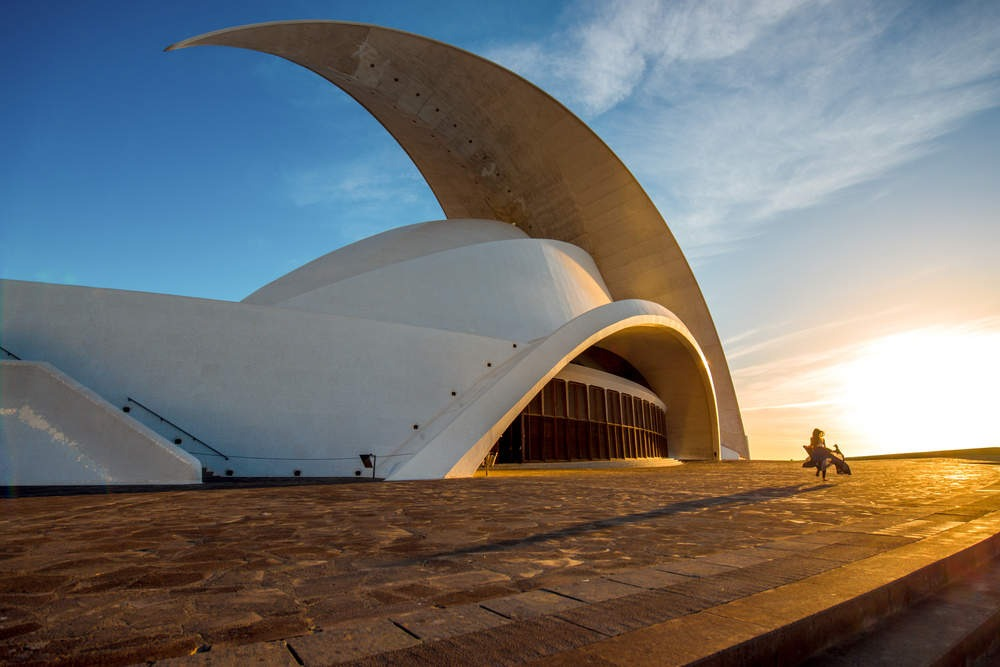
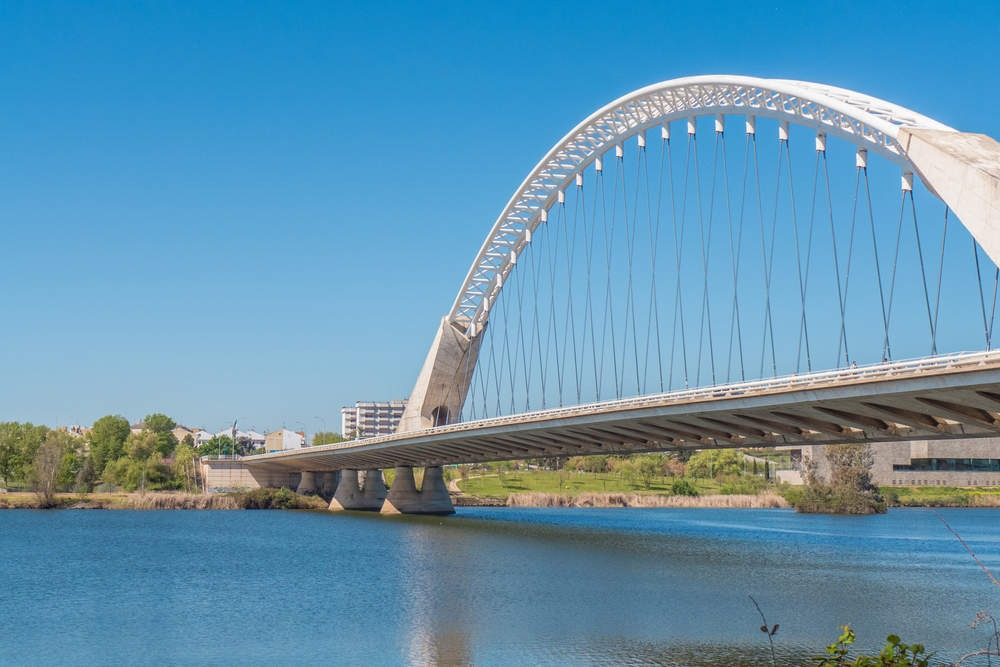
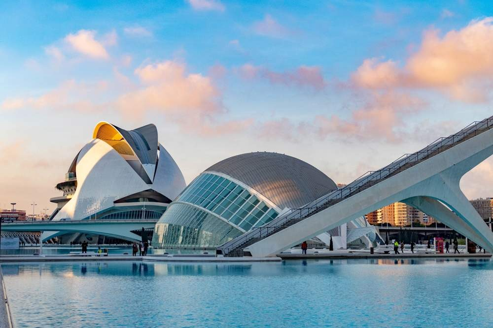
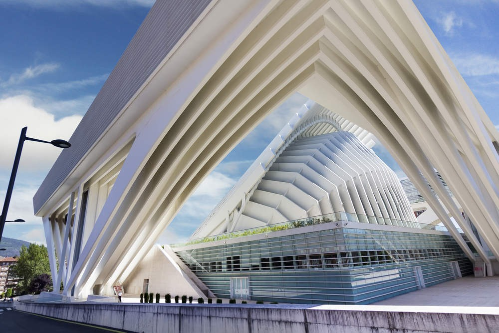
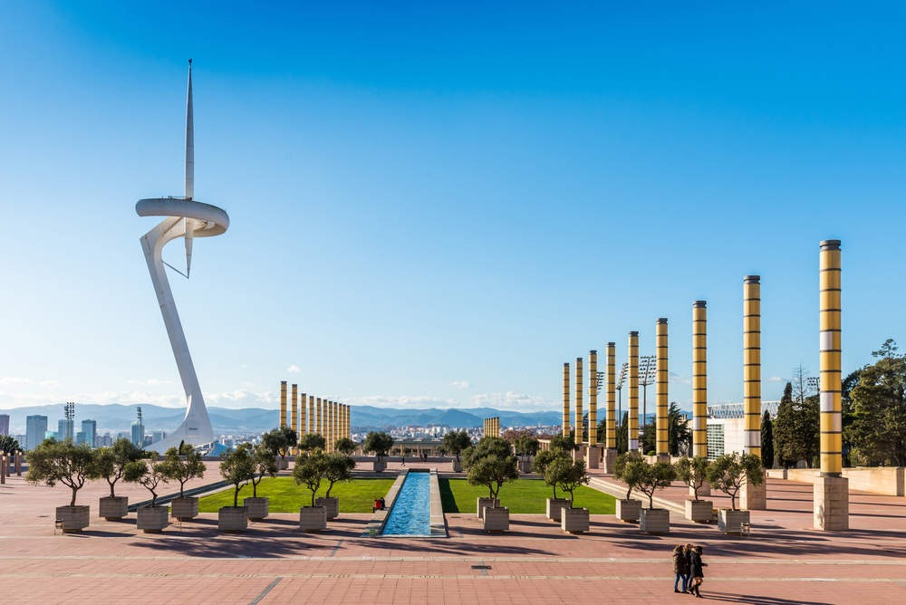

AUDITORIO DE TENERIFE
Este moderno edificio diseñado por Santiago Calatrava y construido en el año 2003 se ha convertido en uno de los iconos de esta isla canaria. Su original perfil, como si de una aleta de tiburón se tratara, fue incluido en los sellos de Correos y en una serie de monedas conmemorativas en las que se mostraban los edificios más emblemáticos de diferentes ciudades españolas. Convertido en uno de los focos turísticos de Canarias, el monumental auditorio se encuentra al sur del puerto de Santa Cruz de Tenerife, en la avenida de la Constitución.
PUENTE LUSITANIA, MÉRIDA
Con 480 metros de longitud, el puente Lusitania cruza el Guadiana a su paso por Mérida. Su principal característica son sus "alas" laterales, un diseño muy común en las obras de Calatrava y que se asemeja a otros puentes como el de la Exposición de Valencia, o el de Bac de Roda, en Barcelona. Su diseño data de 1991 y fue una de las primeras obras del artista.
CIUDAD DE LAS ARTES Y LAS CIENCIAS, VALENCIA
Aunque Valencia tiene mucha arquitectura moderna que ver, la Ciudad de las Artes y las Ciencias es una de las mayores obras del arquitecto valenciano. Este complejo de ocio científico y cultural consta de varios edificios que se han convertido auténticos iconos de la ciudad. El más grande de ellos, el Museo de las Ciencias Príncipe Felipe, está compuesto por un enorme pabellón de planta rectangular que ofrece varias exposiciones interactivas sobre la ciencia y la tecnología. Su lema “Prohibido no tocar” permite a los visitantes aprender de una manera diferente. En uno de sus laterales, rodeado de agua excepto por la zona de la entrada, se halla el Hemisferic, un cine digital 3D cuya principal característica es la pantalla cóncava invertida de 900 metros. El Palacio de las Artes Reina Sofía es, posiblemente, el más polémico por su errores de construcción. Por su parte, el Oceanográfic, con siete ambientes marinos distintos, se ha convertido en el acuario más grande de Europa. El Umbracle es de acceso libre y en él se puede pasear por asombrosos jardines con plantas típicas del clima mediterráneo. Finalmente, el último en haber sido construido, el Ágora, se utiliza únicamente para eventos.
PALACIO DE CONGRESOS DE OVIEDO
En la capital asturiana, el moderno edificio del Palacio de Congresos llama la atención entre su arquitectura urbana. Este edificio, inaugurado en 2011, fue diseñado para acoger diferentes eventos culturales y congresos de la ciudad, aunque en él también se ha abierto un centro comercial. Su estructura, en forma de U, estaba diseñada para que la cubierta móvil que se ubica en su frente pudiese abrirse o cerrarse dependiendo del tiempo. Sin embargo, la promotora decidió dejar la cubierta fija tras una defectuosa ejecución de las soldaduras. Este hecho, más algunas goteras e imperfecciones del edificio han provocado que el Palacio de Congresos no haya estado exento de polémicas haciendo que el arquitecto fuese demandado.
TORRE DE COMUNICACIONES DE MONTJUIC
Construida con motivo de los Juegos Olímpicos de Barcelona 92, esta torre de comunicaciones de 136 metros se alza en una de las partes de la montaña de Montjuic. Está construida en acero y su silueta se ha comparado con la imagen de un deportista levantando la llama olímpica. Su principal característica es que en su base está decorada con una fuente de hormigón recubierta de trencadís, un tipo de ornamentación compuesta de mosaicos muy utilizada por el arquitecto Antoni Gaudí.
